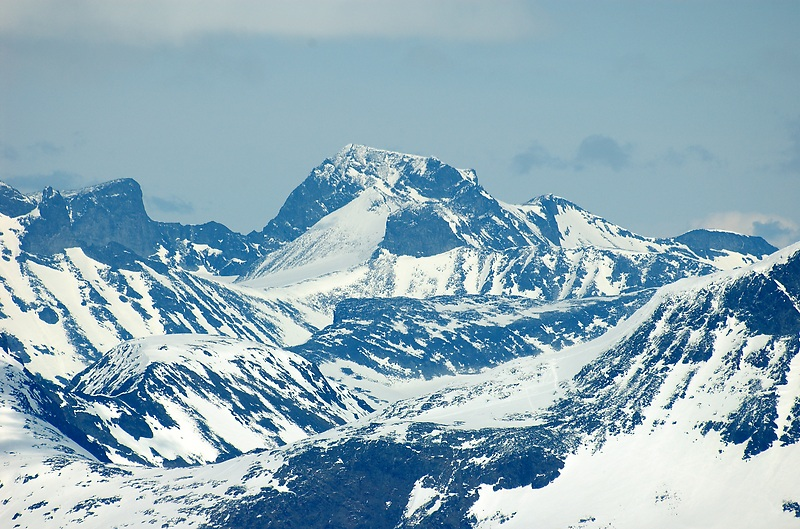
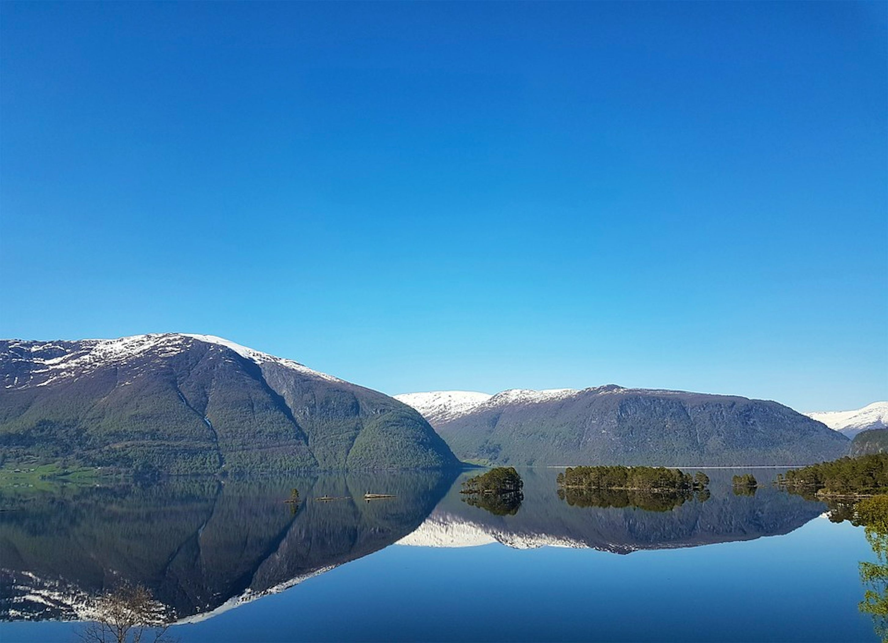

Highest mountain
Galdhøpiggen is the highest mountain in Norway, Scandinavia, and Northern Europe. The 2,469-metre-tall mountain is located in Lom Municipality in Innlandet county, Norway.
Largest fjord
he Sognefjord or Sognefjorden is the largest and deepest fjord in Norway. Located in Vestland county in Western Norway, it stretches 205 kilometres inland.

Deepest Lake
Hornindalsvatnet is Norway's and Europe's deepest lake, and the world's thirteenth deepest lake, officially measured to a depth of 514 m.